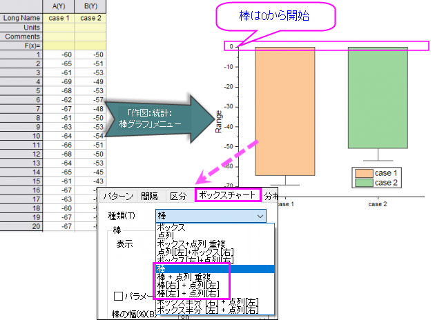

StatsBar-from-BottomAxis
最終更新日：2020/8/4
ボックスタイプを棒に設定したボックスチャートである、統計棒グラフを作成すると、棒の開始をY=0でなく下軸にしたい場合があります。

棒の開始を下軸に設定
@CBB=0;
@CBBはシステム変数で、縦棒/横棒グラフの開始を設定するものなので、上記の操作は、通常の縦棒/横棒グラフにも影響します。
Originのシステム変数についての詳細は、「システム変数を使ってOriginをカスタマイズ」のページを参照してください。